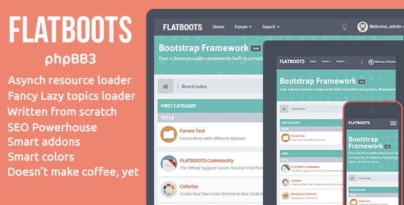
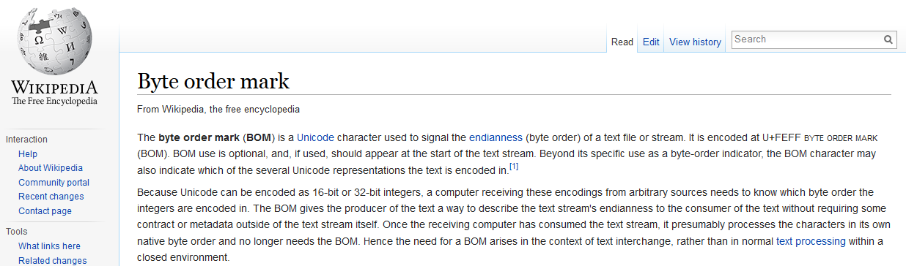
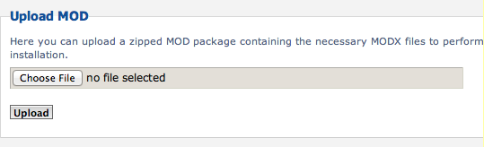
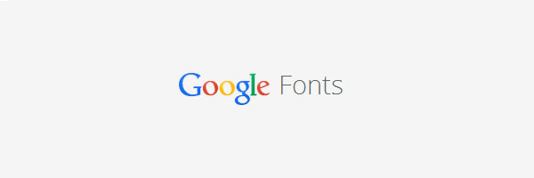
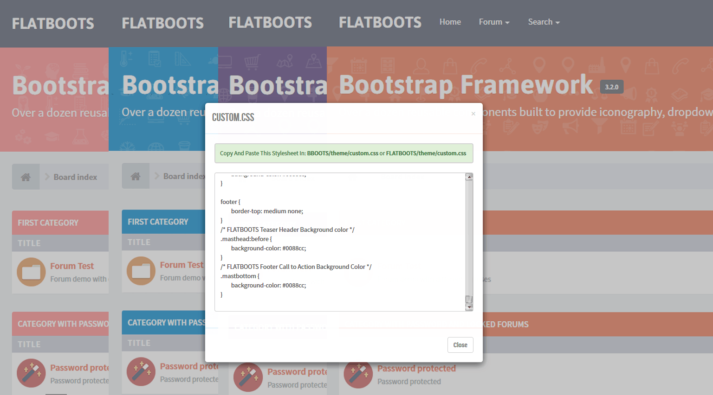
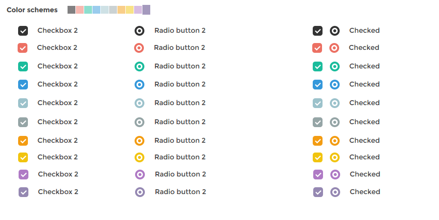
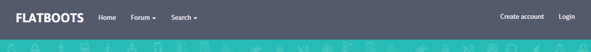

Getting Started
Thank-you for purchasing FLATBBOOTS, the first and the only fully Responsive phpBB3 style that integrates fully the Bootstrap Framework. Dozens of reusable components are built in to provide navigation, alerts, popovers, and much more.
Freelance
If you have any questions that are beyond the scope of this help file, please feel free to email via my user page on ThemeForest or send an email at: info@sitesplat.com. I am available for freelance work to customize you favorite phpBB3 mods or to extend BBOOTS according to your needs. Email me for a quote
Tools
The software suggested that you will need to perform any of the steps in this guide is Notepad++. It can be downloadable from the following link: notepad-plus-plus.org. Notepad++ will allow you to save your files without BOM by default. (Older servers or vendor-specific servers have a problem interpreting them and throw errors because the scripts produce output before they should.)
You can also refer to this text editors list: Text Editors
BOM
Byte Order Mark (BOM), is a Unicode character used to signal the endianness (byte order) of a text file or stream. It is encoded at U+FEFF byte order mark (BOM). BOM use is optional, and, if used, should appear at the start of the text stream. Beyond its specific use as a byte-order indicator, the BOM character may also indicate which of the several Unicode representations the text is encoded in.
Installation
In order to integrate the Bootstrap framework, install succesfully FLATBOOTS and add proper functionality to your phpBB3 forum, there are few core edits that are necessary to be installed. AutoMod is the suggested method to install any phpBB MODs (Addons) automatically. The core edit file needed is within this documentation folder.
- Log in to your phpBB3 Admin Control Panel also known as ACP.
- Click the AutoMod tab in the top navigation tab bar. (If you have NOT yet installed AutoMOD, you will need to download and install it from phpBB.com and then continue to step #3 below)
- Scroll down to the “Upload MOD” section and upload the Select the SiteSplat_BBCore.zip from the documentation folder.
 - You may see a message confirming that the plugin has been uploaded. If so, click “Continue to AutoMOD.”
- Click the “Install” link to complete the installation.
- Upload the "FLATBOOTS" folder contained in: MAIN-THEME/ to your "styles" folder of your forum root.
- From the Administration Control Panel (ACP) and within the "STYLES" tab choose FLATBOOTS (previously uploaded) and install it.
- Make FLATBOOTS the default style
- Done! Enjoy the style ;-)
BBcore
Be sure to install the SiteSplat_BBCore.zip via AutoMod otherwise FLATBOOTS will NOT work properly!
Customization
Social icons
To add or remove social icons open the following template file: FLATBOOTS/template/overall_footer.html and look for:
<ul class="social-network">Control your social links by adding or removing this line of code:
<a title="Google+" data-original-title="" href="#1"><i class="fa fa-google-plus google-plus-color"></i></a>You can change the icons by using any of the font awesome icon classes ready available (you can refer to this list: FontAwesome).
fa fa-google-plusFORUM FONT
You can change the font by adding and removing the through a simple link generated with google free font library
Choose your font from here: Google free font then in the overall_header.html find:
<!-- google free font used for the foum content -->then add your font link below that line:
<link href='http://fonts.googleapis.com/css?family=Source+Sans+Pro:400,600' rel='stylesheet' type='text/css'>
<link href='http://fonts.googleapis.com/css?family=Roboto+Condensed:400,700' rel='stylesheet' type='text/css'>Now you need to call the font family for the various elements. In this case for the menu font open:
basic.css located in the theme folder and around line: 1916 change the primary font family name, font size etc:
font-family: 'BebasNeueRegular','Arial','Helvetica',sans-serif;Your code should look like this:
body {
color: #8d9aa5;
margin: 0;
font-family: 'Source Sans Pro','Arial','Helvetica',sans-serif;
background-color: #ECF0F1;
}Background
For the background image and color open: FLATBOOTS/theme/basics.css and find:
/* GENERAL ELEMENTS - HEADINGS */
body {
color: #77828c;
margin: 0;
font-family: 'Source Sans Pro','Arial','Helvetica',sans-serif;
background-color: ##fbfcfc;
}You can change the background color or add a background pattern/image here
Custom Edits - Custom.css stylesheet
All your edits to the basics.css stylesheet should be inlcuded in the custom.css stylesheet instead. This will leave the original code instact and it will be easier for future style update to carry over your customization
In order to get the Twitter feed from your own Twitter page you need to have a widget ID generated from your Twitter account and then add the ID to the forum footer.
This video shows how to generate a twitter ID from the widget tool: http://www.youtube.com/watch?v=Ypsib-Nx4VQ
Open the overall_footer.html file and find this line:
391407906655965184Replace it with your Widget ID generated from your Twitter account as shown in the video above.
You can also set your a visible and clickable Twitter handle. Open the overall_footer.html file and find this line:
<a href="https://twitter.com/SiteSplat">{L_JOIN_US_TWITTER} <small>@SiteSplat</small></a>Replace this link: https://twitter.com/SiteSplat with your own Twitter link page
Replace this Twitter handle: @SiteSplat with your own Twitter handle
Logo
Open the overall_header.html template file located in: FLATBOOTS/template/ and find:
<a class="navbar-brand" href="{U_INDEX}">{L_FLATBOOTS}</a>Replace the string {L_FLATBOOTS} with your IMG tag:
<img style="max-width:100px; margin-top: -8px;" src="{T_THEME_PATH}/images/logo.png" class="img-responsive" alt="Forum Logo">Upload your logo
You logo should be uploaded in the following folder: FLATBOOTS/theme/images/
In order to have it dsiplayed you also need to refresh your theme, forum and browser cache as shown below:
Colors
Change colors with a click with the COLORIZE service:
You can find the COLORIZE service at www.sitesplat.com/phpBB3/themer.php to generate your own custom color.
Once you generated your own color, Open the following CSS stylesheet located in: FLATBOOTS/theme/custom.css and paste your code after the following comment block in that stylesheet:
/*****************************************************************
* Custom CSS Stylesheet. You can add any custom CSS selectors here after the comment line.
* They will be given the highest priority on any elements on the forum
* Personilize your forum color scheme in one click here: www.sitesplat.com/phpBB3/
* **************************************************************
*
* FLATBOOTS @SiteSplat.com - Custom CSS STYLESHEET -
*
* **************************************************************
*****************************************************************/
If you wish to change come colors manually you can find some common locations in the CSS code generated via the COLORIZE service.
For example if you would like to change the Header background color or the "call To Action" bar background color you can find the commented references in the custom generated with COLORIZE:
/* FLATBOOTS Teaser Header Background color */
.masthead:before {
background-color: #50a846;
}
/* FLATBOOTS Footer Call to Action Background Color */
.mastbottom {
background-color: #50a846;
}
Clear the Cache
Make sure to purge the theme, forum and browser cache everytime you add a new color!
A) Purge the template and theme :
1) Navigate to "Styles" Tab.
2) Under "Style components " click on "Templates".
3) Under "Actions" click on "Refresh" for the FLATBOOTS style installed.
4) in the next screen, click on "Yes" to confirm
5) Repeat the steps for the "Themes" tab right under the "Templates" tab
B) Purge the cache :
1) Navigate to General Tab
2) look at Purge the cache
3) Click on "Run Now" button at right
4) in the next screen, click on "Yes" to confirm
C) Purge the browser cache :
1) Hit F5 on your browser or CTRL+F5Checkbox and Radio
Super customized checkboxes and radio buttons for your style!
Plugin features
- Identical inputs across different browsers and devices — both desktop and mobile
- Touch devices support — iOS, Android, BlackBerry, Windows Phone, Amazon Kindle
- Keyboard accessible inputs — Tab, Spacebar, Arrow up/down and other shortcuts
- Screenreader accessible inputs — ARIA attributes for VoiceOver and others
- Customization freedom — use any HTML and CSS to style inputs (try 6 Retina-ready skins)
- 32 options to customize checkboxes and radio buttons
- 11 callbacks to handle changes
- 9 methods to make changes programmatically
- Saves changes to original inputs, works carefully with any selectors
The checkbox and radio colors can be easily changed.
-
Open the documentation folder and copy the content of the custom.css stylesheet (It includes 10 different colors as shown in the screenshot above) and paste it into:
FLATBOOTS/theme/custom.css.
For different from the default color schemes use this code (example for Red) open FLATBOOTS/template/overall_footer.html and find:
"icheckbox_flat-aero"replace it with (for the checkbox):
"icheckbox_flat-red"Find:
"iradio_flat-aero"replace it with (for the radio):
"iradio_flat-red"The color code definitions ready to be used are the following:
Checkbox
"icheckbox_flat-red""icheckbox_flat-green""icheckbox_flat-blue""icheckbox_flat-grey""icheckbox_flat-orange""icheckbox_flat-yellow""icheckbox_flat-pink""icheckbox_flat-purple"
Radio
"iradio_flat-red""iradio_flat-green""iradio_flat-blue""iradio_flat-grey""iradio_flat-orange""iradio_flat-yellow""iradio_flat-pink""iradio_flat-purple"
Navigation
The main navigation bar can be adjusted to behave in different ways.
The current options are:
- Standard (Default)
- Fixed Top (AKA Sticky)
- Fixed Bottom
- Change/edit links
Fixed Top
The Fixed Top option will allow you to have a Fixed (Sticky) navigation bar that will maintain the position regardless of the scrolling of the main content. This is especially useful for mobile devices.
In order to activate the Fixed Top navigation you simply need to add two classes to the navigation bar and the main header banner.
Open FLATBOOTS/template/overall_header.html and find:
<header role="banner" id="top" class="navbar navbar-inverse navbar-static-top flat-nav">Replace it with:
<header role="banner" id="top" class="navbar navbar-inverse navbar-static-top flat-nav navbar-fixed-top">Open FLATBOOTS/template/addons/header_teaser_body.html and find:
<div class="masthead flat-header">Replace it with:
<div class="masthead flat-header flat-header-fixed-top">There is a known issue with the sticky navigation. For additional information see: https://github.com/twbs/bootstrap/issues/1768 and also: https://stackoverflow.com/questions/10732690/offsetting-an-html-anchor-to-adjust-for-fixed-header. However a workaround can be applied. Open the FLATBOOTS/template/viewtopic_body.html and find:
<!-- INCLUDE overall_footer.html -->Before on a new line add:
<script>
head.ready(function () {
function scroll_if_anchor(t){if(t="string"==typeof t?t:$(this).attr("href")){var o=90;if("#"==t.charAt(0)){var i=$(t);if(i.length&&($("html, body").animate({scrollTop:i.offset().top-o}),history&&"pushState"in history))return history.pushState({},document.title,window.location.pathname+t),!1}}}scroll_if_anchor(window.location.hash),$("body").on("click","a",scroll_if_anchor);
});
</script>Fixed Bottom
The Fixed Bottom option will allow you to have a Fixed (Sticky) navigation bar like the above option but the position will be at the bottom of the forum instead.
Open FLATBOOTS/template/overall_header.html and find:
<header role="banner" id="top" class="navbar navbar-inverse navbar-static-top flat-nav">Replace it with:
<header role="banner" id="top" class="navbar navbar-inverse navbar-static-top flat-nav navbar-fixed-bottom">Change/edit links
The default links can be changed, edited or added by editing the navigation file. Open: FLATBOOTS/template/addons/navigation.html in order to change, edit or add links.
Header
The Header tile is stored in the addons folder within the FLATBOOTS template folder.
This block can be eaily modifed to reflect your forum community slogan and/or favorite images.
the current available options are:
- Standard (Default)
- Change image and color
- Animation Turn ON/OFF
Open FLATBOOTS/template/addons/header_teaser_body.html and find:
<h1>{L_FLATBOOTS_INTRO} <a class="label label-call" href="http://getbootstrap.com/">{L_BOOTSTRAP_VERSION}</a></h1>
<p>{L_FLATBOOTS_EXPLAIN}</p>The language variables {L_FLATBOOTS_INTRO} and {L_FLATBOOTS_EXPLAIN} are part of the BBcore and once installed they can be found and edited to reflect your own text in the following file:your_forum_root/language/en/mods/sitesplat.php
Change the image and color
The default icons image can be changed via CSS. Make sure to upload your image in:FLATBOOTS/theme/images/
Open FLATBOOTS/theme/basics.css and find:
background: url("{T_THEME_PATH}/images/tile-bg-head.png") repeat fixed 0 0 #26bcb5;Replace tile-bg-head.png wit hthe title of your image and save.
If you have a transparent image you can also set the background color to it. In the default example is set to : #26bcb5 Use the hex value to set your color.
Turn ON/OFF the animation
The animation can be easily turned on/off
Open FLATBOOTS/theme/basics.css and find:
/*animation-name*/
-webkit-animation-name:masthead;
-moz-animation-name:masthead;
-ms-animation-name:masthead;
-o-animation-name:masthead;
animation-name:masthead;Replace it with following code to turn it OFF:
/*animation-name*/
-webkit-animation-name:masthead-off;
-moz-animation-name:masthead-off;
-ms-animation-name:masthead-off;
-o-animation-name:masthead-off;
animation-name:masthead-off;Footer
The footer is divided in tree main parts. Two sections and the actual footer block.
- Section one - Call To Action
- Section two containing:
- About us
- Footer block containing:
- Navigation Links
- Social links
The footer template is located in: FLATBOOTS/tempalte/overall_footer.html
Section one - Call To Action
This call to action bar can be found in the addons folder. Open: FLATBOOTS/template/addons/call_to_action_body.html
The language variables {L_CALL_TO_ACTION_FOOTER} and {L_PURCHASE_NOW_BTN} are part of the BBcore and once installed they can be found and edited to reflect your own text in the following file:your_forum_root/language/en/mods/sitesplat.php
Section two - About us and Twitter
The about us text is accessible via language file. The variables are: {L_FLATBOOTS_ABOUT_TITLE} and {L_FLATBOOTS_ABOUT_PART_ONE}
The Twitter block and function is explained in Here
The navigation links can be edited within the same overall_footer.html file. Find:
<ul class="list-inline footer-nav">
<li><a href="{U_ADVERTISE}" title="">{L_ADVERTISE}</a></li>
<li><a href="{U_PRIVACY}" title="">{L_PRIVACY}</a></li>
<li><a href="{U_DMCA}" title="">{L_DMCA}</a></li>
<li><a href="{U_TERMS_USE}" title="">{L_TERMS}</a></li>
<li><a href="{U_CONTACT}" title="">{L_CONTACT}</a></li>
</ul>and change, edit or add links contained the the block.
The social links and icons are explained here: Social links
Recent Topics
The Fancy Lazy Topics Loader can be downloadable for free from: SiteSplat - Fancy Lazy Topic Loader
Fancy Lazy Topics Loader
It can be installed via AutoMod.
Fancy Lazy Topics Loader Options:
- First post content / No avatar DEFAULT
- First post content / First poster avatar
- Last post content / Last poster avatar
- Topic blocks number
- Forum exclusion
- Avatars
First post content / First poster avatar
The First post content and no avatar are the default settings. You can change this behaviour to: last post content with the last poster avatar
Once installed open root/inlcudes/functions.php and find:
first-post or last-post avatar/post-text -- must be 'first' or 'last'
$type = 'first';Change to "last" in order to have the Last post content and the last poster avatar. This is how the code will look like:
first-post or last-post avatar/post-text -- must be 'first' or 'last'
$type = 'last';Topic blocks number
Yo ucan select how many topics to feed. Once installed open root/inlcudes/functions.php and find:
number of post "blocks" to display -- $limit must be a multiple of 4
$limit = 20;Change the numeric value to a multiple of 4. For example to feed only 8 topics, enter the value of 8 Your code will look like:
number of post "blocks" to display -- $limit must be a multiple of 4
$limit = 8;Forum Exclusion
It is possible to exclude forums from showing in the recent topics. This can be useful for busy board where there might be an introduction forum therefore you might want to avoid all the toopics and posts from showing in the list.
Once installed open root/inlcudes/functions.php and find:
$excluded = array();Now you can add the forum ID's separated by comma, for example:
$excluded = array(2,4,6);Avatar
it is possible to use a template variable that will display the avatar of the original poster or the avatar of the last poster. The variable is the following:
{rtrow.AUTHOR_AVATAR}The following example will demonstrate how to use the avatar in the template file and show it right at the beginning of the block. Open FLATBOOTS/template/addons/fancy_lazy_topics_body.html and add the variable above like this:
{rtrow.AUTHOR_AVATAR}
<div class="blog-meta">
<time datetime="{rtrow.TOPIC_YEAR}-{rtrow.TOPIC_MONTH_DIGIT}-{rtrow.TOPIC_DAY_DIGIT}" class="entry-date">
<span class="day">{rtrow.TOPIC_DAY_DIGIT}</span>
<span class="month">{rtrow.TOPIC_MONTH}</span>
</time>TRANSLATIONS
You can add your own language pack to your forum by downloading and installing the official phpBB3 language packs here: Language Packs
Once the language pack is installed you need to translate the FLATBOOTS's own language file. This file gets installed automatically with the BBcore package.
The location is: language/en/mods/sitesplat.php. Open sitesplat.php file with notepad++, translate the content and save. Now you need to add the bboots.php file to your language pack (previosuly installed) directory. For example if you installed French, the location where to copy the boots.php file will be in: root/language/fr/mods/
You can also check out the official support forum at: FLATBOOTS Language Packs and see if there is already a language file translated.
BOM free
Make sure to use Notepad++ or a one of the suggested editor mentioned in the "tools" section in order to save the php file without BOM.